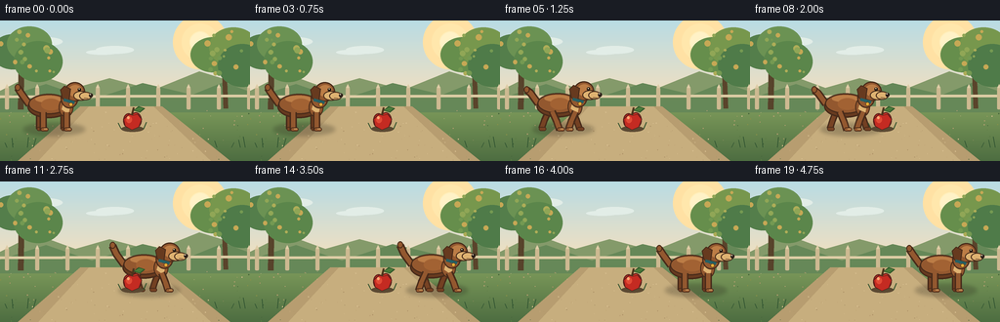
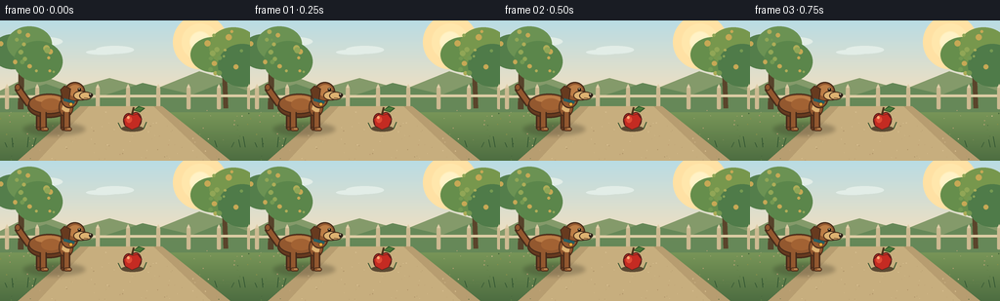

CODING AGENTS AS PIXEL WORLD MODELS
traex/GPT-5.6-Sol · instance_preservation_0002
点击播放 · 原生 RGB 像素
逐轮保存的候选
回放视频、检查图与代码变化。
每份候选均可单独播放。实际图片检查记录在下方工具轨迹中。
候选 01播放与检查图
点击播放 · 原生 RGB 像素


展开代码变化
--- 上一保存版本
+++ 本次保存版本
@@ -0,0 +1,227 @@
+from pathlib import Path
+import math
+import numpy as np
+from PIL import Image, ImageDraw, ImageFilter
+import artifact_io
+
+# PixelWorld: a hand-rendered, softly lit storybook scene.
+W, H, N, S = 256, 144, 20, 4
+ROOT = Path(__file__).resolve().parent
+rng = np.random.default_rng(17)
+
+def q(v):
+ return int(round(v * S))
+
+def box(b):
+ return tuple(q(v) for v in b)
+
+def pts(seq):
+ return [(q(x), q(y)) for x, y in seq]
+
+def ellipse(d, b, fill, outline=None, width=1):
+ d.ellipse(box(b), fill=fill, outline=outline, width=q(width) if outline else 1)
+
+def polygon(d, xy, fill, outline=None, width=1):
+ pp = pts(xy)
+ d.polygon(pp, fill=fill)
+ if outline:
+ d.line(pp + [pp[0]], fill=outline, width=q(width), joint='curve')
+
+def line(d, xy, fill, width=1, joint='curve'):
+ d.line(pts(xy), fill=fill, width=q(width), joint=joint)
+
+def rounded(d, b, radius, fill, outline=None, width=1):
+ d.rounded_rectangle(box(b), radius=q(radius), fill=fill, outline=outline,
+ width=q(width) if outline else 1)
+
+def build_background():
+ hh, ww = H*S, W*S
+ arr = np.zeros((hh, ww, 3), dtype=np.float32)
+ top = np.array([185, 220, 228.], np.float32)
+ horizon = np.array([248, 224, 188.], np.float32)
+ grass1 = np.array([126, 155, 91.], np.float32)
+ grass2 = np.array([77, 109, 65.], np.float32)
+ for y in range(hh):
+ yy = y / S
+ if yy < 87:
+ t = yy / 87
+ arr[y] = top*(1-t) + horizon*t
+ else:
+ t = (yy-87)/(H-87)
+ arr[y] = grass1*(1-t) + grass2*t
+ im = Image.fromarray(np.uint8(np.clip(arr, 0, 255)), 'RGB')
+ d = ImageDraw.Draw(im)
+
+ # Warm sun and a few very soft high clouds.
+ for rad, col in [(28, (255,225,164)), (19, (255,231,172)), (11, (255,239,188))]:
+ ellipse(d, (205-rad, 22-rad, 205+rad, 22+rad), col)
+ ellipse(d, (195, 12, 215, 32), (255,242,199))
+ for b in [(13,21,52,28),(30,17,64,26),(88,30,121,35),(98,26,137,34)]:
+ ellipse(d, b, (226,237,231))
+
+ # Distant rolling fields.
+ polygon(d, [(0,72),(36,54),(77,69),(112,59),(157,71),(204,52),(256,68),(256,91),(0,91)], (132,154,106))
+ polygon(d, [(0,80),(47,65),(94,81),(146,64),(197,76),(229,63),(256,73),(256,94),(0,94)], (102,136,88))
+
+ # Trees frame rather than obscure the action.
+ line(d, [(22,30),(21,91)], (87,67,43), 6)
+ line(d, [(229,37),(231,90)], (90,68,43), 5)
+ for cx,cy,rx,ry,col in [
+ (13,32,22,18,(84,126,75)),(30,24,23,18,(107,146,83)),(39,42,25,21,(91,134,75)),
+ (218,35,23,18,(102,142,76)),(239,27,25,20,(119,151,77)),(248,46,25,22,(79,123,73))]:
+ ellipse(d,(cx-rx,cy-ry,cx+rx,cy+ry),col)
+ # Speckled leaf light.
+ for _ in range(34):
+ side = rng.choice([0,1])
+ cx = rng.uniform(0,55) if side==0 else rng.uniform(208,256)
+ cy = rng.uniform(11,61)
+ r = rng.uniform(1.1,3.3)
+ col = rng.choice([(144,166,86),(174,173,88),(198,168,85),(116,153,82)])
+ ellipse(d,(cx-r,cy-r,cx+r,cy+r),tuple(col))
+
+ # A pale timber fence establishes depth.
+ line(d, [(0,78),(256,77)], (221,205,165), 3)
+ for x in range(5,257,31):
+ rounded(d,(x,69,x+4,91),1.2,(205,185,145))
+ polygon(d,[(x,69),(x+2,65),(x+4,69)],(223,205,167))
+
+ # Curving path on which the two subjects sit.
+ polygon(d, [(82,88),(166,88),(236,144),(18,144)], (183,157,112))
+ polygon(d, [(91,88),(157,88),(216,144),(39,144)], (199,174,126))
+ for _ in range(115):
+ x = rng.uniform(0,W); y = rng.uniform(91,H)
+ if 36 + (y-144)*.75 < x < 219 - (y-144)*.63:
+ col = rng.choice([(176,148,105),(215,190,143),(192,162,117)])
+ r = rng.uniform(.18,.55)
+ else:
+ col = rng.choice([(67,99,57),(91,122,68),(132,143,74)])
+ r = rng.uniform(.2,.65)
+ ellipse(d,(x-r,y-r,x+r,y+r),tuple(col))
+
+ # A few crisp foreground grass stems.
+ for x in [7,13,28,34,222,237,246,251]:
+ h = rng.uniform(4,11)
+ line(d,[(x,130),(x+rng.uniform(-3,3),130-h)],(48,83,49),.7)
+ return im
+
+BACKGROUND = build_background()
+
+def draw_dog(im, cx, gait, moving):
+ d = ImageDraw.Draw(im)
+ bob = -0.65*abs(math.sin(gait)) if moving else 0
+ cy = 87 + bob
+
+ # Soft contact shadow follows the exact same animal through the shot.
+ shadow = Image.new('RGBA', im.size, (0,0,0,0))
+ sd = ImageDraw.Draw(shadow)
+ sd.ellipse(box((cx-29,105,cx+34,118)), fill=(45,42,31,70))
+ shadow = shadow.filter(ImageFilter.GaussianBlur(q(2.0)))
+ im.paste(shadow, (0,0), shadow)
+ d = ImageDraw.Draw(im)
+
+ outline = (72,43,26)
+ deep = (103,58,31)
+ brown = (147,88,47)
+ light = (188,125,70)
+ cream = (222,178,113)
+
+ # Tail: recognizable curved upward silhouette, with only a gentle wag.
+ wag = math.sin(gait) * 3.0 if moving else 0
+ line(d, [(cx-23,cy-1),(cx-31,cy-12),(cx-35,cy-18+wag)], outline, 8)
+ line(d, [(cx-23,cy-1),(cx-31,cy-12),(cx-35,cy-18+wag)], brown, 5)
+ ellipse(d,(cx-38,cy-22+wag,cx-32,cy-15+wag),brown,outline,1)
+
+ # Far legs first. Opposing strides make the translation read as walking.
+ a = math.sin(gait)
+ far_specs = [(-13, -a, (119,67,36)), (12, a, (115,64,34))]
+ for xoff, stride, col in far_specs:
+ hipx = cx+xoff; knee_x = hipx + stride*4.0
+ footx = hipx + stride*7.0
+ line(d,[(hipx,cy+7),(knee_x,cy+16),(footx,111)],outline,7)
+ line(d,[(hipx,cy+7),(knee_x,cy+16),(footx,111)],col,4)
+ rounded(d,(footx-2.5,109,footx+5,113),2,col,outline,.8)
+
+ # Stable torso with dark lower contour and warm upper highlight.
+ ellipse(d,(cx-25,cy-10,cx+19,cy+13),deep,outline,1.4)
+ ellipse(d,(cx-24,cy-12,cx+18,cy+9),brown,outline,1.2)
+ ellipse(d,(cx-17,cy-10,cx+10,cy-3),light)
+ ellipse(d,(cx-11,cy-7,cx+9,cy+5),(162,98,51))
+ # Shoulder/chest patch.
+ ellipse(d,(cx+7,cy-8,cx+22,cy+12),brown,outline,1)
+ polygon(d,[(cx+13,cy-6),(cx+19,cy-1),(cx+17,cy+9),(cx+10,cy+4)],cream)
+
+ # Near legs, clearly attached and consistently colored.
+ near_specs = [(-9, a), (15, -a)]
+ for xoff, stride in near_specs:
+ hipx = cx+xoff; knee_x = hipx + stride*4.5
+ footx = hipx + stride*7.5
+ line(d,[(hipx,cy+7),(knee_x,cy+17),(footx,112)],outline,7.5)
+ line(d,[(hipx,cy+7),(knee_x,cy+17),(footx,112)],brown,4.5)
+ rounded(d,(footx-2.5,109.5,footx+5.5,113.5),2,brown,outline,.8)
+ line(d,[(footx+1,111),(footx+4.3,111)],cream,.65)
+
+ # Neck and head, always facing right toward the direction of travel.
+ ellipse(d,(cx+9,cy-18,cx+27,cy+3),brown,outline,1.2)
+ ellipse(d,(cx+13,cy-24,cx+34,cy-4),brown,outline,1.3)
+ # Brow/cheek modelling.
+ ellipse(d,(cx+17,cy-21,cx+31,cy-9),light)
+ ellipse(d,(cx+22,cy-15,cx+38,cy-5),cream,outline,1)
+ # Long soft ear.
+ polygon(d,[(cx+13,cy-20),(cx+19,cy-17),(cx+17,cy-3),(cx+11,cy-7),(cx+9,cy-16)],deep,outline,1)
+ ellipse(d,(cx+26.5,cy-18,cx+30,cy-14.5),(42,29,21))
+ ellipse(d,(cx+27.4,cy-17.4,cx+28.4,cy-16.4),(245,224,174))
+ # Snout and shiny black nose.
+ ellipse(d,(cx+28,cy-14,cx+41,cy-5.5),cream,outline,1)
+ ellipse(d,(cx+38,cy-12.5,cx+42,cy-8.2),(45,32,25))
+ ellipse(d,(cx+38.7,cy-12,cx+40,cy-10.8),(230,218,190))
+ line(d,[(cx+33,cy-7.7),(cx+37,cy-7.2)],outline,.7)
+ # Teal collar and small brass tag stay fixed to this dog.
+ line(d,[(cx+12,cy-6),(cx+23,cy-3)],(37,96,100),3)
+ ellipse(d,(cx+17.5,cy-3,cx+21.5,cy+1),(229,172,54),outline,.6)
+
+
+def draw_apple(im):
+ d = ImageDraw.Draw(im)
+ ax = 135
+ # Separate static shadow firmly anchors the apple at center throughout.
+ ellipse(d,(124,108,147,114),(91,73,50))
+ # Tiny grass around (never moves).
+ line(d,[(124,111),(121,105)],(48,82,45),1)
+ line(d,[(147,111),(150,104)],(48,82,45),1)
+ # Red apple: two lobes, dimple, stem and leaf.
+ outline=(91,30,25)
+ ellipse(d,(126,95,137,110),(182,42,34),outline,1)
+ ellipse(d,(133,94,145,110),(205,50,38),outline,1)
+ polygon(d,[(126.5,101),(128,108),(135,112),(142,109),(145,101),(141,96),(136,97),(132,96)],(196,43,34),outline,.8)
+ ellipse(d,(129,98,135,105),(226,74,53))
+ ellipse(d,(130,98,132.5,101),(250,168,117))
+ line(d,[(135,97),(137,89)],(76,53,29),2)
+ polygon(d,[(137,92),(142,88),(148,90),(143,94)],(66,117,54),(40,79,37),.7)
+ line(d,[(138,91),(145,90)],(114,157,79),.5)
+
+
+def render_frame(i):
+ # Hold each required relation long enough to read, then use eased travel.
+ if i <= 3:
+ t = 0.0
+ elif i >= 16:
+ t = 1.0
+ else:
+ u = (i-3)/13.0
+ t = u*u*(3-2*u)
+ cx = 53 + (198-53)*t
+ moving = 3 < i < 16
+ gait = 8*math.pi*t # four complete walk cycles; identical endpoint pose
+
+ im = BACKGROUND.copy()
+ draw_dog(im, cx, gait, moving)
+ # The apple is a constant foreground landmark as the dog passes it.
+ draw_apple(im)
+ im = im.resize((W,H), Image.Resampling.LANCZOS)
+ arr = np.asarray(im, dtype=np.uint8)
+ return arr
+
+frames = np.stack([render_frame(i) for i in range(N)], axis=0)
+assert frames.shape == (20,144,256,3) and frames.dtype == np.uint8
+artifact_io.save(frames, ROOT)
+print('Saved', frames.shape, 'RGB frames to', ROOT)
可观测工具轨迹
实际执行的命令与返回图片。
命令 1exit 0
/bin/bash -lc "cat prompt.txt && printf '\\n---RULES---\\n' && cat GENERATION_RULES.md && printf '\\n---SPEC---\\n' && cat task_spec.json"
命令 2exit 0
/bin/bash -lc "find . -maxdepth 2 -type f -printf '%p\\n' | sort && printf '\\nTOOLS\\n' && command -v ffmpeg || true; command -v blender || true; python - <<'PY' import importlib.util for x in ['cv2','numpy','PIL','imageio','moviepy','cairo','moderngl']: print(x, bool(importlib.util.find_spec(x))) PY"
命令 3exit 0
/bin/bash -lc 'cat artifact_io.py'
命令 4exit 0
/bin/bash -lc "cat > generate.py <<'PY'
from pathlib import Path
import math
import numpy as np
from PIL import Image, ImageDraw, ImageFilter
import artifact_io
# PixelWorld: a hand-rendered, softly lit storybook scene.
W, H, N, S = 256, 144, 20, 4
ROOT = Path(__file__).resolve().parent
rng = np.random.default_rng(17)
def q(v):
return int(round(v * S))
def box(b):
return tuple(q(v) for v in b)
def pts(seq):
return [(q(x), q(y)) for x, y in seq]
def ellipse(d, b, fill, outline=None, width=1):
d.ellipse(box(b), fill=fill, outline=outline, width=q(width) if outline else 1)
def polygon(d, xy, fill, outline=None, width=1):
pp = pts(xy)
d.polygon(pp, fill=fill)
if outline:
d.line(pp + [pp[0]], fill=outline, width=q(width), joint='curve')
def line(d, xy, fill, width=1, joint='curve'):
d.line(pts(xy), fill=fill, width=q(width), joint=joint)
def rounded(d, b, radius, fill, outline=None, width=1):
d.rounded_rectangle(box(b), radius=q(radius), fill=fill, outline=outline,
width=q(width) if outline else 1)
def build_background():
hh, ww = H*S, W*S
arr = np.zeros((hh, ww, 3), dtype=np.float32)
top = np.array([185, 220, 228.], np.float32)
horizon = np.array([248, 224, 188.], np.float32)
grass1 = np.array([126, 155, 91.], np.float32)
grass2 = np.array([77, 109, 65.], np.float32)
for y in range(hh):
yy = y / S
if yy < 87:
t = yy / 87
arr[y] = top*(1-t) + horizon*t
else:
t = (yy-87)/(H-87)
arr[y] = grass1*(1-t) + grass2*t
im = Image.fromarray(np.uint8(np.clip(arr, 0, 255)), 'RGB')
d = ImageDraw.Draw(im)
# Warm sun and a few very soft high clouds.
for rad, col in [(28, (255,225,164)), (19, (255,231,172)), (11, (255,239,188))]:
ellipse(d, (205-rad, 22-rad, 205+rad, 22+rad), col)
ellipse(d, (195, 12, 215, 32), (255,242,199))
for b in [(13,21,52,28),(30,17,64,26),(88,30,121,35),(98,26,137,34)]:
ellipse(d, b, (226,237,231))
# Distant rolling fields.
polygon(d, [(0,72),(36,54),(77,69),(112,59),(157,71),(204,52),(256,68),(256,91),(0,91)], (132,154,106))
polygon(d, [(0,80),(47,65),(94,81),(146,64),(197,76),(229,63),(256,73),(256,94),(0,94)], (102,136,88))
# Trees frame rather than obscure the action.
line(d, [(22,30),(21,91)], (87,67,43), 6)
line(d, [(229,37),(231,90)], (90,68,43), 5)
for cx,cy,rx,ry,col in [
(13,32,22,18,(84,126,75)),(30,24,23,18,(107,146,83)),(39,42,25,21,(91,134,75)),
(218,35,23,18,(102,142,76)),(239,27,25,20,(119,151,77)),(248,46,25,22,(79,123,73))]:
ellipse(d,(cx-rx,cy-ry,cx+rx,cy+ry),col)
# Speckled leaf light.
for _ in range(34):
side = rng.choice([0,1])
cx = rng.uniform(0,55) if side==0 else rng.uniform(208,256)
cy = rng.uniform(11,61)
r = rng.uniform(1.1,3.3)
col = rng.choice([(144,166,86),(174,173,88),(198,168,85),(116,153,82)])
ellipse(d,(cx-r,cy-r,cx+r,cy+r),tuple(col))
# A pale timber fence establishes depth.
line(d, [(0,78),(256,77)], (221,205,165), 3)
for x in range(5,257,31):
rounded(d,(x,69,x+4,91),1.2,(205,185,145))
polygon(d,[(x,69),(x+2,65),(x+4,69)],(223,205,167))
# Curving path on which the two subjects sit.
polygon(d, [(82,88),(166,88),(236,144),(18,144)], (183,157,112))
polygon(d, [(91,88),(157,88),(216,144),(39,144)], (199,174,126))
for _ in range(115):
x = rng.uniform(0,W); y = rng.uniform(91,H)
if 36 + (y-144)*.75 < x < 219 - (y-144)*.63:
col = rng.choice([(176,148,105),(215,190,143),(192,162,117)])
r = rng.uniform(.18,.55)
else:
col = rng.choice([(67,99,57),(91,122,68),(132,143,74)])
r = rng.uniform(.2,.65)
ellipse(d,(x-r,y-r,x+r,y+r),tuple(col))
# A few crisp foreground grass stems.
for x in [7,13,28,34,222,237,246,251]:
h = rng.uniform(4,11)
line(d,[(x,130),(x+rng.uniform(-3,3),130-h)],(48,83,49),.7)
return im
BACKGROUND = build_background()
def draw_dog(im, cx, gait, moving):
d = ImageDraw.Draw(im)
bob = -0.65*abs(math.sin(gait)) if moving else 0
cy = 87 + bob
# Soft contact shadow follows the exact same animal through the shot.
shadow = Image.new('RGBA', im.size, (0,0,0,0))
sd = ImageDraw.Draw(shadow)
sd.ellipse(box((cx-29,105,cx+34,118)), fill=(45,42,31,70))
shadow = shadow.filter(ImageFilter.GaussianBlur(q(2.0)))
im.paste(shadow, (0,0), shadow)
d = ImageDraw.Draw(im)
outline = (72,43,26)
deep = (103,58,31)
brown = (147,88,47)
light = (188,125,70)
cream = (222,178,113)
# Tail: recognizable curved upward silhouette, with only a gentle wag.
wag = math.sin(gait) * 3.0 if moving else 0
line(d, [(cx-23,cy-1),(cx-31,cy-12),(cx-35,cy-18+wag)], outline, 8)
line(d, [(cx-23,cy-1),(cx-31,cy-12),(cx-35,cy-18+wag)], brown, 5)
ellipse(d,(cx-38,cy-22+wag,cx-32,cy-15+wag),brown,outline,1)
# Far legs first. Opposing strides make the translation read as walking.
a = math.sin(gait)
far_specs = [(-13, -a, (119,67,36)), (12, a, (115,64,34))]
for xoff, stride, col in far_specs:
hipx = cx+xoff; knee_x = hipx + stride*4.0
footx = hipx + stride*7.0
line(d,[(hipx,cy+7),(knee_x,cy+16),(footx,111)],outline,7)
line(d,[(hipx,cy+7),(knee_x,cy+16),(footx,111)],col,4)
rounded(d,(footx-2.5,109,footx+5,113),2,col,outline,.8)
# Stable torso with dark lower contour and warm upper highlight.
ellipse(d,(cx-25,cy-10,cx+19,cy+13),deep,outline,1.4)
ellipse(d,(cx-24,cy-12,cx+18,cy+9),brown,outline,1.2)
ellipse(d,(cx-17,cy-10,cx+10,cy-3),light)
ellipse(d,(cx-11,cy-7,cx+9,cy+5),(162,98,51))
# Shoulder/chest patch.
ellipse(d,(cx+7,cy-8,cx+22,cy+12),brown,outline,1)
polygon(d,[(cx+13,cy-6),(cx+19,cy-1),(cx+17,cy+9),(cx+10,cy+4)],cream)
# Near legs, clearly attached and consistently colored.
near_specs = [(-9, a), (15, -a)]
for xoff, stride in near_specs:
hipx = cx+xoff; knee_x = hipx + stride*4.5
footx = hipx + stride*7.5
line(d,[(hipx,cy+7),(knee_x,cy+17),(footx,112)],outline,7.5)
line(d,[(hipx,cy+7),(knee_x,cy+17),(footx,112)],brown,4.5)
rounded(d,(footx-2.5,109.5,footx+5.5,113.5),2,brown,outline,.8)
line(d,[(footx+1,111),(footx+4.3,111)],cream,.65)
# Neck and head, always facing right toward the direction of travel.
ellipse(d,(cx+9,cy-18,cx+27,cy+3),brown,outline,1.2)
ellipse(d,(cx+13,cy-24,cx+34,cy-4),brown,outline,1.3)
# Brow/cheek modelling.
ellipse(d,(cx+17,cy-21,cx+31,cy-9),light)
ellipse(d,(cx+22,cy-15,cx+38,cy-5),cream,outline,1)
# Long soft ear.
polygon(d,[(cx+13,cy-20),(cx+19,cy-17),(cx+17,cy-3),(cx+11,cy-7),(cx+9,cy-16)],deep,outline,1)
ellipse(d,(cx+26.5,cy-18,cx+30,cy-14.5),(42,29,21))
ellipse(d,(cx+27.4,cy-17.4,cx+28.4,cy-16.4),(245,224,174))
# Snout and shiny black nose.
ellipse(d,(cx+28,cy-14,cx+41,cy-5.5),cream,outline,1)
ellipse(d,(cx+38,cy-12.5,cx+42,cy-8.2),(45,32,25))
ellipse(d,(cx+38.7,cy-12,cx+40,cy-10.8),(230,218,190))
line(d,[(cx+33,cy-7.7),(cx+37,cy-7.2)],outline,.7)
# Teal collar and small brass tag stay fixed to this dog.
line(d,[(cx+12,cy-6),(cx+23,cy-3)],(37,96,100),3)
ellipse(d,(cx+17.5,cy-3,cx+21.5,cy+1),(229,172,54),outline,.6)
def draw_apple(im):
d = ImageDraw.Draw(im)
ax = 135
# Separate static shadow firmly anchors the apple at center throughout.
ellipse(d,(124,108,147,114),(91,73,50))
# Tiny grass around (never moves).
line(d,[(124,111),(121,105)],(48,82,45),1)
line(d,[(147,111),(150,104)],(48,82,45),1)
# Red apple: two lobes, dimple, stem and leaf.
outline=(91,30,25)
ellipse(d,(126,95,137,110),(182,42,34),outline,1)
ellipse(d,(133,94,145,110),(205,50,38),outline,1)
polygon(d,[(126.5,101),(128,108),(135,112),(142,109),(145,101),(141,96),(136,97),(132,96)],(196,43,34),outline,.8)
ellipse(d,(129,98,135,105),(226,74,53))
ellipse(d,(130,98,132.5,101),(250,168,117))
line(d,[(135,97),(137,89)],(76,53,29),2)
polygon(d,[(137,92),(142,88),(148,90),(143,94)],(66,117,54),(40,79,37),.7)
line(d,[(138,91),(145,90)],(114,157,79),.5)
def render_frame(i):
# Hold each required relation long enough to read, then use eased travel.
if i <= 3:
t = 0.0
elif i >= 16:
t = 1.0
else:
u = (i-3)/13.0
t = u*u*(3-2*u)
cx = 53 + (198-53)*t
moving = 3 < i < 16
gait = 8*math.pi*t # four complete walk cycles; identical endpoint pose
im = BACKGROUND.copy()
draw_dog(im, cx, gait, moving)
# The apple is a constant foreground landmark as the dog passes it.
draw_apple(im)
im = im.resize((W,H), Image.Resampling.LANCZOS)
arr = np.asarray(im, dtype=np.uint8)
return arr
frames = np.stack([render_frame(i) for i in range(N)], axis=0)
assert frames.shape == (20,144,256,3) and frames.dtype == np.uint8
artifact_io.save(frames, ROOT)
print('Saved', frames.shape, 'RGB frames to', ROOT)
PY
python generate.py
ls -lh pixels.npz inspection.png transition_check.png index.html frames/00.png frames/19.png"命令 5exit 0
/bin/bash -lc "python - <<'PY'
from pathlib import Path
import numpy as np
from PIL import Image
z=np.load('pixels.npz')['pixels']
print('pixels:',z.shape,z.dtype,'range',z.min(),z.max())
for i in [0,3,4,8,10,12,15,16,19]:
im=Image.open(f'frames/{i:02d}.png')
print(i, im.mode, im.size, np.asarray(im).mean(axis=(0,1)).round(1), 'bytes',Path(f'frames/{i:02d}.png').stat().st_size)
# Verify held shots and changing movement sequence.
a=np.stack([np.asarray(Image.open(f'frames/{i:02d}.png')) for i in range(20)])
print('adjacent changed pixels:', [int(np.any(a[i]"'!=a[i-1],axis=2).sum()) for i in range(1,20)])
print('"'initial hold exact:', np.array_equal(a[0],a[3]), 'final hold exact:',np.array_equal(a[16],a[19]))
PY"保存候选 1 份；完成命令 5 次；可验证图片返回 0 张。原始 API 响应与完整日志保留在本地。